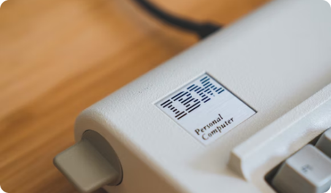
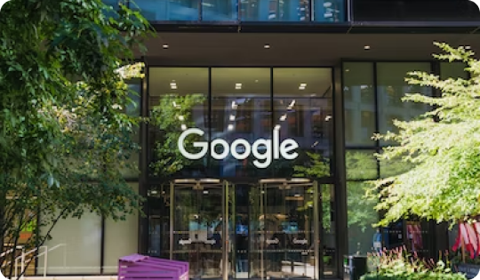
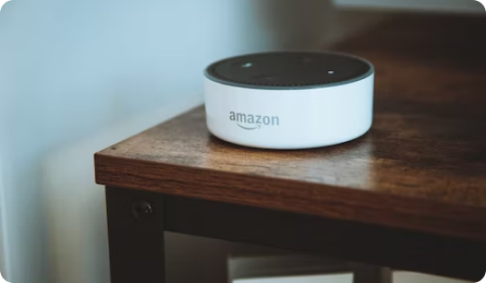
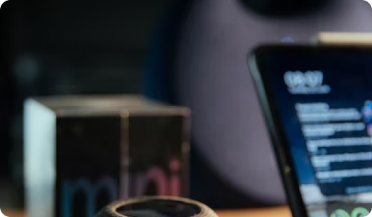
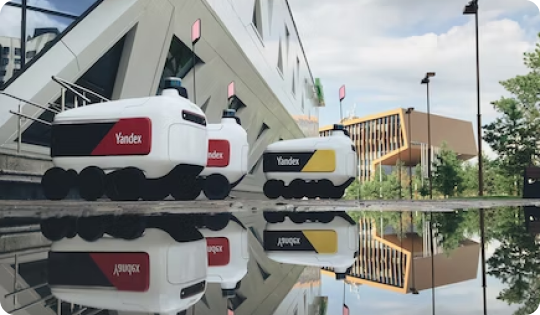
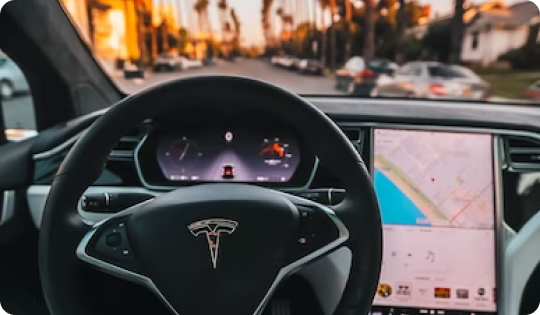
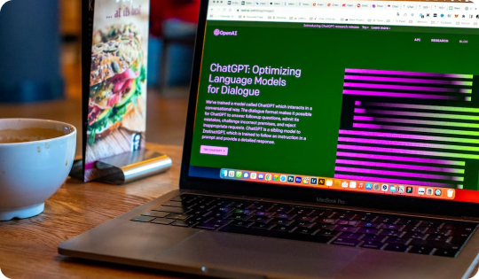
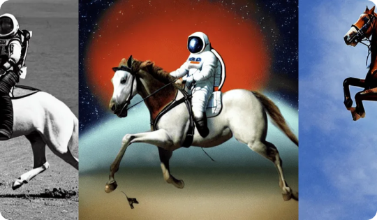
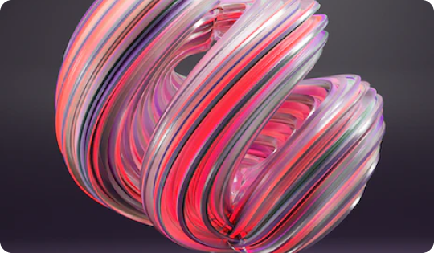

Watson используется для диагностики и лечении рака. Watson может анализировать историю болезни пациента, симптомы и результаты анализов намного быстрее, чем любой человек, и предлагать варианты лечения, которые могли быть упущены
Подробнее
В марте 2016 года весь мир с изумлением наблюдал, как система искусственного интеллекта Google AlphaGo победила 18-кратного чемпиона мира Ли Седоля в игре в го — подвиг, который многие эксперты сочли «невозможным»
Подробнее
Alexa — это виртуальный помощник, разработанный Amazon, который можно использовать для управления широким спектром интеллектуальных устройств в доме, включая освещение, термостаты и телевизоры
Подробнее
Как и Alexa, Siri можно использовать для управления интеллектуальными устройствами в доме и для выполнения широкого круга задач, таких как установка будильника, отправка сообщений и поиск в Интернете
ПодробнееCortana — это виртуальный помощник, разработанный Microsoft, встроенный в операционную систему Windows 10. Кортану можно использовать для выполнения широкого круга задач: напоминаний, отправка электронных писем и открытие приложений
ПодробнееСервис подойдет для создания вертикальных изображений. Основное преимущество – возможность самостоятельно выбрать стиль исполнения будущего изображения (более 30 вариантов) и прикрепить референс к запросу
Подробнее
Яндекс – самый узнаваемый российский бренд, связанный с инновациями. Эта компания занимается машинным обучением, нейронными сетями и искусственным интеллектом, чтобы справляться с объёмами информации, которую она ежедневно получает и производит
Подробнее
Этот производитель электромобилей разрабатывает и осуществляет применение искусственного интеллекта для управления машинами. Элон Маск утверждает, что цифровое зрение Hardware 3 будет обрабатывать до 2 000 кадров в секунду
ПодробнееВ этом году нейросети вышли на новый уровень популярности. С их помощью уже создают не только изображения, но и полноценные игры. К примеру, в Steam вышел проект, материалы для которого были сделаны искусственным интеллектом Midjourney
Подробнее
Чат-бот с искусственным интеллектом, разработанный компанией OpenAI, способный работать в диалоговом режиме. ChatGPT - большая языковая модель, для тренировки которой использовались методы обучения с учителем и обучения с подкреплением
Подробнее
Это нейросеть, которая предназначена для генерации изображений по текстовому запросу. Она была выпущена в августе 2022 года компанией Stability AI, автором идеи стал Эмад Мостак. Главная особенность заключается в открытом исходном коде
Подробнее
Это ИИ, которое преобразует текст в изображения. На данный момент запущен бета-тест с помощью бота Discord. Благодаря ему можно создать что вашему и его воображению угодно
Подробнее